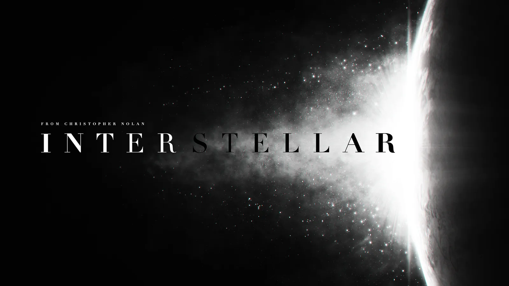
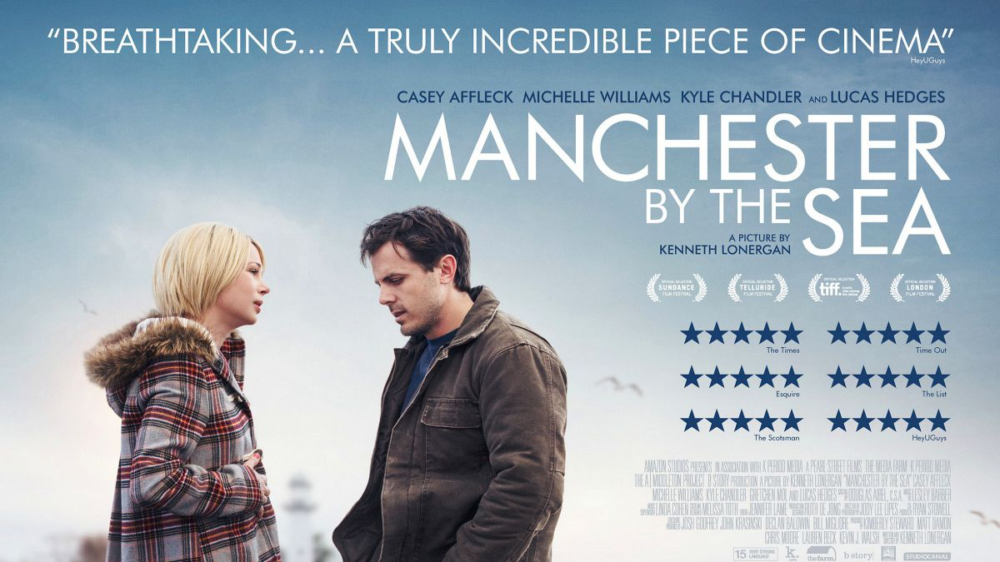
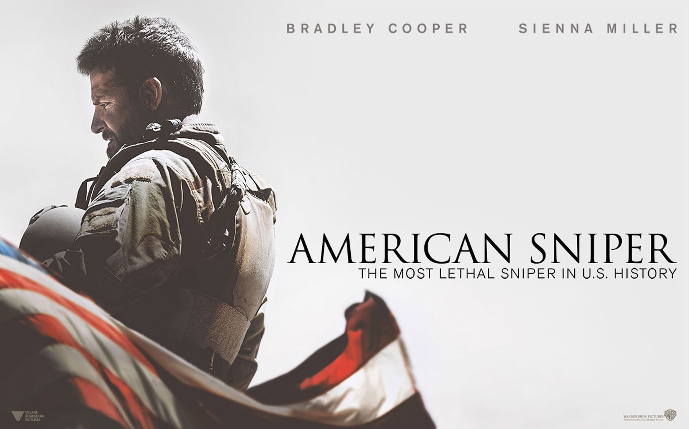
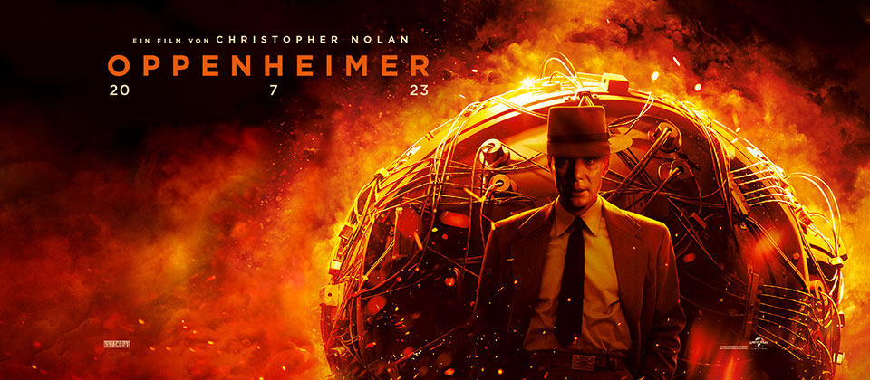
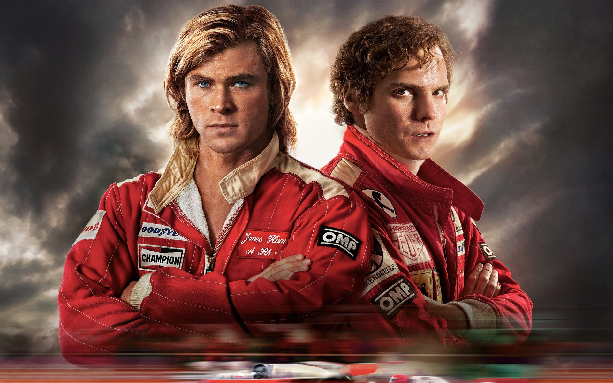

Manchester by the sea
Manchester by the Sea is a 2016 American drama film written and directed by Kenneth Lonergan that stars Casey Affleck, Michelle Williams, Kyle Chandler, and Lucas Hedges. Revolving around the themes of depression, guilt, grief, responsibility, dysfunctional families, and post-traumatic stress disorder, the plot follows a depressed and grief-stricken man who becomes the legal guardian of his teenage nephew after the death of his brother.
Continue Reading

American Sniper
American Sniper is a 2014 American biographical war drama film directed by Clint Eastwood and written by Jason Hall. It is loosely based on the memoir American Sniper: The Autobiography of the Most Lethal Sniper in U.S. Military History (2012) by Chris Kyle, with Scott McEwen and Jim DeFelice. The film follows the life of Kyle, who became the deadliest marksman in U.S. military history with 255 kills from four tours in the Iraq War, 160 of which were officially confirmed by the Department of Defense. While Kyle was celebrated for his military successes, his tours of duty took a heavy toll on his personal and family life. The film was produced by Eastwood, Robert Lorenz, Andrew Lazar, Bradley Cooper, and Peter Morgan. It stars Cooper as Kyle and Sienna Miller as his wife Taya, with Luke Grimes, Jake McDorman, Cory Hardrict, Kevin Lacz, Navid Negahban, and Keir O'Donnell in supporting roles.
Continue Reading

Oppenheimer
Oppenheimer is a 2023 epic biographical thriller film written and directed by Christopher Nolan. It stars Cillian Murphy as J. Robert Oppenheimer, the American theoretical physicist credited with being the "father of the atomic bomb" for his role in the Manhattan Project—the World War II undertaking that developed the first nuclear weapons. Based on the 2005 biography American Prometheus by Kai Bird and Martin J. Sherwin, the film chronicles the career of Oppenheimer, with the story predominantly focusing on his studies, his direction of the Manhattan Project during World War II, and his eventual fall from grace due to his 1954 security hearing.
Continue Reading

Rush
Rush is a 2013 biographical sports film centred on the rivalry between two Formula One drivers, the Briton James Hunt and the Austrian Niki Lauda, during the 1976 motor-racing season. It was written by Peter Morgan, directed by Ron Howard and starred Chris Hemsworth as Hunt and Daniel Brühl as Lauda. The film premiered in London on 2 September 2013 and was shown at the 2013 Toronto International Film Festival before its United Kingdom release on 13 September 2013. The film received positive reviews from critics for Hemsworth and Brühl's performances, Howard's direction, the racing sequences, and Hans Zimmer's musical score.
Continue Reading
